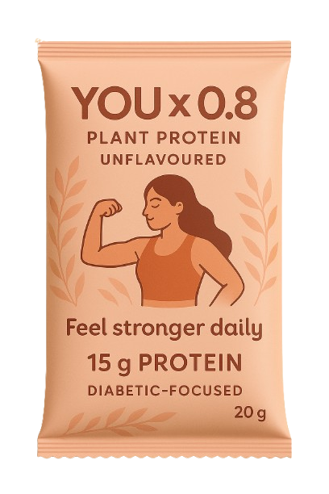

Most Indians, especially women and students in PGs or hostels, miss their daily protein needs.
Your body needs 0.8g per kg every day — but regular meals often fall short.
That's why ekScoop brings YOU x 0.8 — a clean, lab-tested protein sachet that gives you 30–35% of your daily protein in one scoop.